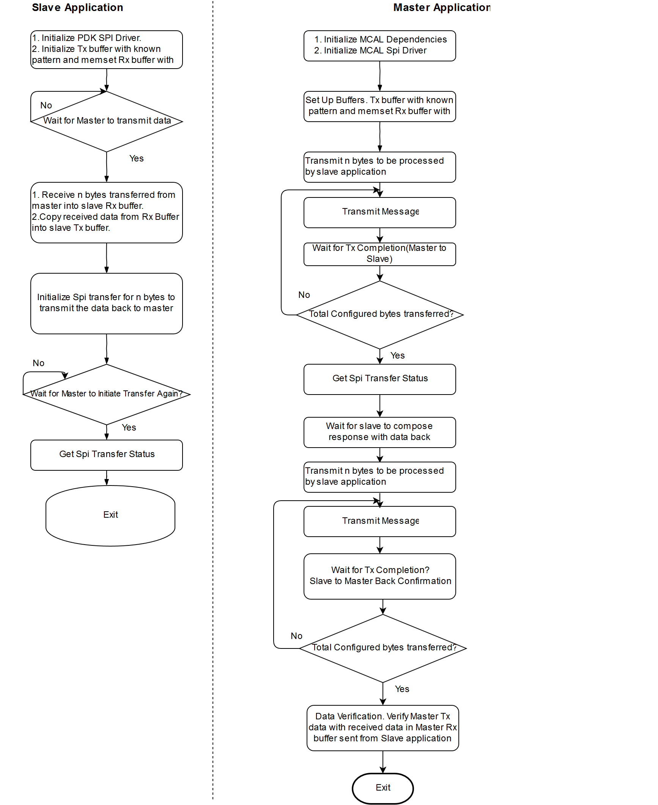

Introduction
This application demonstrates the IPC communication between Main Domain and MCU Domain cores(mcu1_0 and mpu1_0) using two SPI instances which are connected internally. Simulates transmission and reception of messages of data size 4 bytes.
Dependencies
Master Application
This application depends on multiple components and are detailed in sections below
- TI RTOS : Uses Task, semaphore, Interrupt Handling HWI and Profiling Utility.
- MCAL
- MCAL BSW Stubs Stubs at (SDK Install Directory)/mcusw_xx.yy.xx.bb/mcuss_demos/Bsw_Stubs are used.
- MCAL Configurations Spi Configurations at (SDK Install Directory)/mcusw_xx.yy.xx.bb/mcuss_demos/mcal_config are used.
- The MCAL Spi driver based Master application used for profiling is hosted on mcu1_0.
Slave Application
This application depends on multiple components and are detailed in sections below
- TI RTOS : Uses Task, Semaphore, Interrupt Handling HWI and Swi.
- PDK
- Slave application is hosted on mpu1_0.
Requirement Id: MCAL-1020
Back To Top
Flow Chart
- ipc_spi_slave_demo_app_mpu1_0_release.xa53fg would be hosted on Remote Core (MPU 1 0).
- ipc_spi_master_demo_app_mcu1_0_release.xer5f would be hosted on Local Core (MCU 1 0)

Ipc Spi Master Slave Application
Back To Top
Measured Performance
- SPI Clock is configured at 48 Mhz
- 4 bytes of messages are transmitted by master
| SoC Family | Avg K cycles per message | Message Size | Comments |
| DRA80X | 14.96 | 4 b Tx | MCU R5F Clocked at 400 Mhz |
| J721E | 19.61 | 4 b Tx | MCU R5F Clocked at 1000 Mhz |
Back To Top
Compile Time Configurations
- SPI_DEV_ERROR_DETECT Control checks of configurations and parameters. Turned OFF for profiling test
- SPI_JOB_LOG Enables SPI job logging. Turned OFF for profiling test
Back To Top
Test Setup / Configurations used
EVM
- Requires EVM only, as the SPI instances are connected internally.
Back To Top
Steps to run
- Build the demo application as detailed in User Guide
- Steps to run is detailed in User Guide
- Slave binary should be executed first before executing master.
Back To Top
DRA80X Sample Output
Sample output Master Slave Mode
Sections are placed as MCUSW_INSTALL_PATH\build\am65xx\linker_r5_sysbios.lds.
þIPC_SPI Master Demo App:: Sample Application - STARTS !!!
IPC_SPI Master Demo App:
IPC_SPI Master Demo App:SPI MCAL Version Info
IPC_SPI Master Demo App:---------------------
IPC_SPI Master Demo App:Vendor ID : 44
IPC_SPI Master Demo App:Module ID : 83
IPC_SPI Master Demo App:SW Major Version : 0
IPC_SPI Master Demo App:SW Minor Version : 1
IPC_SPI Master Demo App:SW Patch Version : 0
IPC_SPI Master Demo App:
IPC_SPI Master Demo App:CH 1: JOBS 1: SEQ 1: HWUNIT 1:!!!
IPC_SPI Master Demo App:Variant - Post Build being used !!!
IPC_SPI Master Demo App:Transmitted Message of size 4 bytes, 1000 times in 37395 usecs
IPC_SPI Master Demo App:Average of 37.40 usecs per transmit
IPC_SPI Master Demo App:Measured Load: Total CPU: 1%, HWI: 0%, SWI:0% TSK: 0%
IPC_SPI Master Demo App:SPI Test Passed!!!
[CortexA53_0_0] IPC_SPI Slave Demo App:SPI initialized
IPC_SPI Slave Demo App:Successful slave SPI transmit/receive
Back To Top
Sample output Master Slave Mode Text Section OCMRAM
If sections are updated w.r.o below changes, the performance numbers looks below.
diff --git a/build/am65xx/linker_r5_sysbios.lds b/build/am65xx/linker_r5_sysbios.lds
old mode 100644
new mode 100755
index b0955f0..1fbad06
--- a/build/am65xx/linker_r5_sysbios.lds
+++ b/build/am65xx/linker_r5_sysbios.lds
@@ -94,16 +94,16 @@ SECTIONS
.intc_text : {} palign(8) > VECTORS
.rstvectors : {} palign(8) > RESET_VECTORS
.text : {} palign(8) > OCMRAM
- .const : {} palign(8) > DDR0_MCUSW
+ .const : {} palign(8) > OCMRAM
.cinit : {} palign(8) > OCMRAM
.pinit : {} palign(8) > OCMRAM
- .bss : {} align(4) > DDR0_MCUSW
+ .bss : {} align(4) > OCMRAM
.data : {} palign(128) > OCMRAM
.sysmem : {} > OCMRAM
.stack : {} align(4) > OCMRAM (HIGH) fill=FILL_PATTERN
/* Additional sections settings */
- McalTextSection : fill=FILL_PATTERN, align=4, load > DDR0_MCUSW
+ McalTextSection : fill=FILL_PATTERN, align=4, load > OCMRAM
{
.=align(4);
__linker_spi_text_start = .;
@@ -193,7 +193,7 @@ SECTIONS
__linker_cdd_ipc_text_end = .;
}
- McalConstSection : fill=FILL_PATTERN, align=4, load > DDR0_MCUSW
+ McalConstSection : fill=FILL_PATTERN, align=4, load > OCMRAM
{
.=align(4);
__linker_spi_const_start = .;
@@ -288,7 +288,7 @@ SECTIONS
__linker_cdd_ipc_const_end = .;
}
- McalInitSection : fill=FILL_PATTERN, align=4, load > DDR0_MCUSW
+ McalInitSection : fill=FILL_PATTERN, align=4, load > OCMRAM
{
.=align(4);
__linker_spi_init_start = .;
@@ -374,7 +374,7 @@ SECTIONS
. += FILL_LENGTH;
__linker_cdd_ipc_init_end = .;
}
- McalNoInitSection : fill=FILL_PATTERN, align=4, load > DDR0_MCUSW, type = NOINIT
+ McalNoInitSection : fill=FILL_PATTERN, align=4, load > OCMRAM, type = NOINIT
{
.=align(4);
__linker_spi_no_init_start = .;
ÿIPC_SPI Master Demo App:: Sample Application - STARTS !!!
IPC_SPI Master Demo App:
IPC_SPI Master Demo App:SPI MCAL Version Info
IPC_SPI Master Demo App:---------------------
IPC_SPI Master Demo App:Vendor ID : 44
IPC_SPI Master Demo App:Module ID : 83
IPC_SPI Master Demo App:SW Major Version : 0
IPC_SPI Master Demo App:SW Minor Version : 1
IPC_SPI Master Demo App:SW Patch Version : 0
IPC_SPI Master Demo App:
IPC_SPI Master Demo App:CH 1: JOBS 1: SEQ 1: HWUNIT 1:!!!
IPC_SPI Master Demo App:Variant - Post Build being used !!!
IPC_SPI Master Demo App:SPI Test Passed!!!
IPC_SPI Master Demo App:Transmitted Message of size 4 bytes, 1000 times in 36430 usecs
IPC_SPI Master Demo App:Average of 36.43 usecs per transmit
IPC_SPI Master Demo App:Measured Load: Total CPU: 1%, HWI: 0%, SWI:0% TSK: 0%
[CortexA53_0_0] IPC_SPI Slave Demo App:SPI initialized
IPC_SPI Slave Demo App:Successful slave SPI transmit/receive
Back To Top
J721E Sample Output
IPC_SPI Master Demo App:: Sample Application - STARTS !!!
IPC_SPI Master Demo App:
IPC_SPI Master Demo App:SPI MCAL Version Info
IPC_SPI Master Demo App:---------------------
IPC_SPI Master Demo App:Vendor ID : 44
IPC_SPI Master Demo App:Module ID : 83
IPC_SPI Master Demo App:SW Major Version : 0
IPC_SPI Master Demo App:SW Minor Version : 1
IPC_SPI Master Demo App:SW Patch Version : 0
IPC_SPI Master Demo App:
IPC_SPI Master Demo App:CH 1: JOBS 1: SEQ 1: HWUNIT 1:!!!
IPC_SPI Master Demo App:Variant - Post Build being used !!!
IPC_SPI Master Demo App:Transmitted Message of size 4 bytes, 1000 times in 179144 usecs
IPC_SPI Master Demo App:Average of 179.14 usecs per transmit
IPC_SPI Master Demo App:Measured Load: Total CPU: 1.389442%, HWI: 0.613139%, SWI:0.151491% TSK: 0.624816%
IPC_SPI Master Demo App:SPI Test Passed!!!
Back To Top
Document Revision History
| Revision | Date | Author | Description | Status
|
| 0.1 | 17 Apr 2019 | Sunil M S | Initial Version | Under Review |
| 0.2 | 16 Jul 2019 | Sujith S | Added J721E numbers | Approved |
| 0.3 | 16 Oct 2019 | Sunil M S | Updated J721E numbers | Approved |
| 0.4 | 6 Feb 2020 | Sunil M S | Updated Sample op log | Approved |
 1.8.14
1.8.14